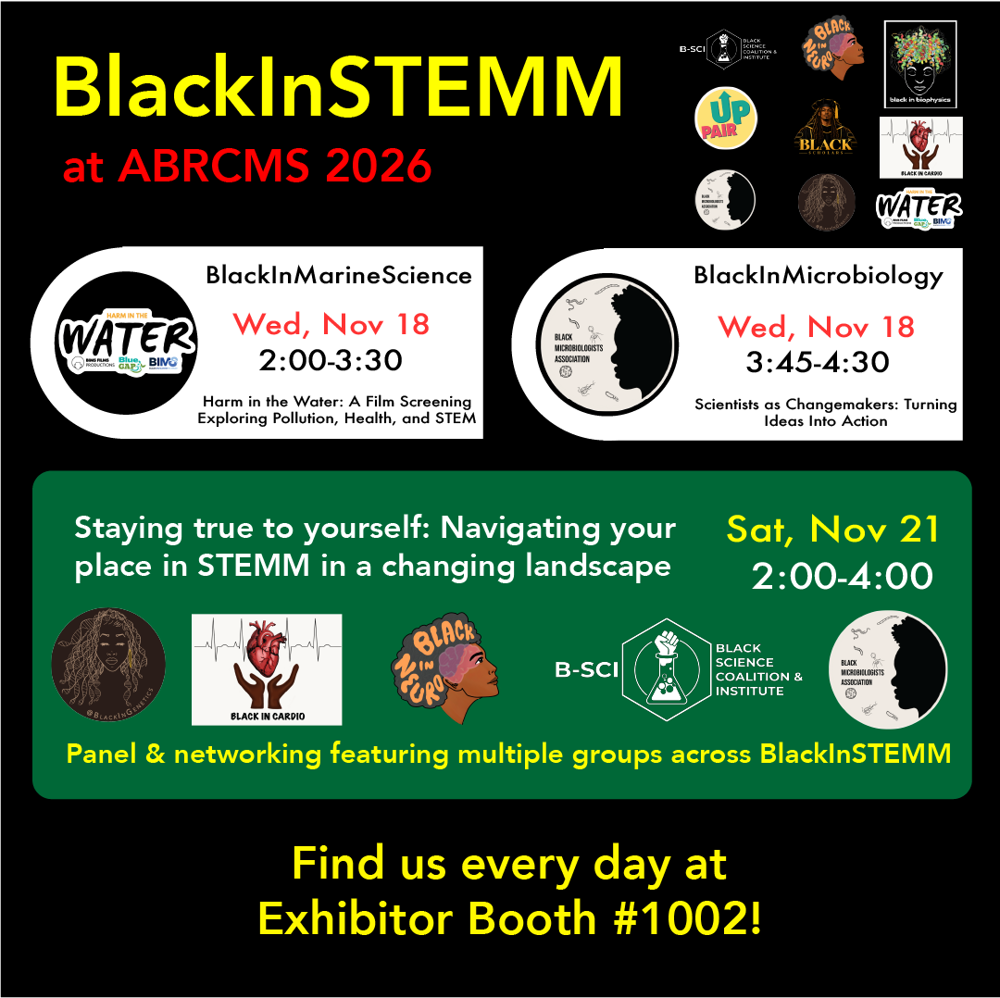

Centering Black Knowledge. Building Collective Power. Transforming STEMM.
Our mission is to empower, elevate, and connect Black scholars across STEMM (Science, Technology, Engineering, Mathematics, and Medicine) by cultivating a collaborative community grounded in collective support, shared knowledge, and transformative action. We center Black scholars as knowledge producers, innovators, and leaders while recognizing each of our intellectual contributions, expertise, and lived experiences contribute to how we view science.
Through interdisciplinary collaboration, sustainable mentorship, and advocating for equitable infrastructure, we foster spaces where Black professionals and trainees can build meaningful relationships, access resources, share opportunities, and thrive collectively. We are committed to supporting, uplifting, and amplifying Black-led organizations, initiatives, and communities throughout STEMM.
Beyond supporting individual success in STEMM, we seek to transform institutional structures and scientific cultures that shape who belongs, who leads, and whose knowledge is valued. By prioritizing collective action, strengthening community, and expanding pathways to leadership, we envision a world where Black scholars are empowered to belong, thrive, innovate, and lead—and where future generations have the opportunity and infrastructure to do the same.
Our mission is to empower, elevate, and connect Black scholars across STEMM through interdisciplinary collaboration, collective support, and transformative action.
Cultivating a safe, mindful community where Black scholars across STEMM disciplines are valued, supported, and authentically included.
Building visible pathways and elevating Black scholars in STEMM as mentors and leaders for future generations who provide actionable guidance, network access, and sustained career support across all stages.
While we prioritize a supportive, safe space for Black STEMM scholars, we are scholars. We aim to showcase our respective contributions to knowledge, rigor, and innovation across STEMM.
As an interdisciplinary community, we encourage our members to utilize this group to find fruitful, innovative collaborative opportunities which mutually benefit their scientific pursuits.
